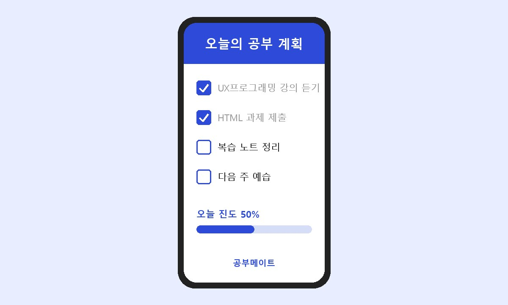

서비스 소개
공부 계획을 끝까지 지키는 습관
계획은 세웠는데 며칠 지나면 흐지부지되지 않나요? 공부메이트는 해야 할 공부를 작은 단위로 나누고, 매일 얼마나 해냈는지 한눈에 보여 줍니다.

주요 기능
-
오늘의 할 일
과목별 공부 계획을 체크리스트로 정리합니다.
-
진도 그래프
일주일 동안 얼마나 공부했는지 그래프로 보여 줍니다.
-
공부 알림
정해 둔 시간이 되면 오늘 공부할 내용을 알려 줍니다.
미리 써 보기
공부메이트의 세 가지 기능을 탭으로 바꿔 가며 직접 눌러 보세요.
오늘의 할 일
진도 그래프
공부 알림
이용 방법
- 듣고 있는 과목과 이번 주 목표를 등록합니다.
- 자동으로 만들어진 오늘의 공부 계획을 확인합니다.
- 공부를 마칠 때마다 체크하고 진도를 확인합니다.
첫 공부 계획 만들기
1 / 3 · 계획 만들기 단계
1. 공부할 과목
이번 주에 가장 먼저 챙길 과목 하나를 적어 주세요. 예) 데이터베이스
2. 이번 주 목표
3. 입력 내용 확인
- 과목
- 목표
- 하루 공부 시간
바꿀 내용이 있으면 '이전'을 눌러 고칠 수 있어요.
공부 계획이 만들어졌어요
위의 '미리 써 보기 > 오늘의 할 일'에서 오늘 할 공부를 체크해 보세요.
내 공부 계획
저장한 계획을 목표별로 찾아보고, 다 끝난 계획은 지울 수 있어요. (최대 5개)
무료로 시작하기
이메일을 입력한 뒤 신청해 주세요.